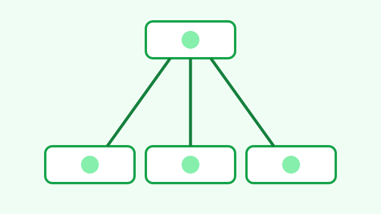
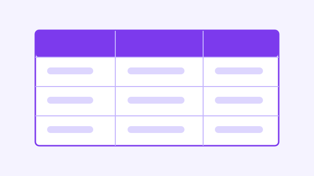
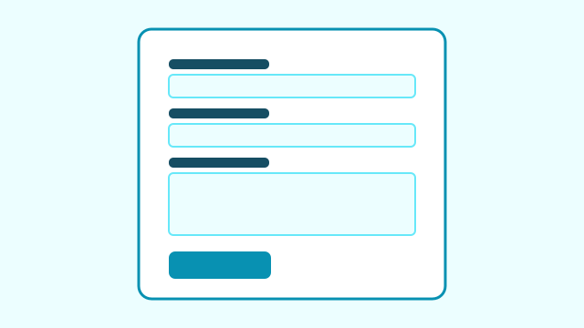
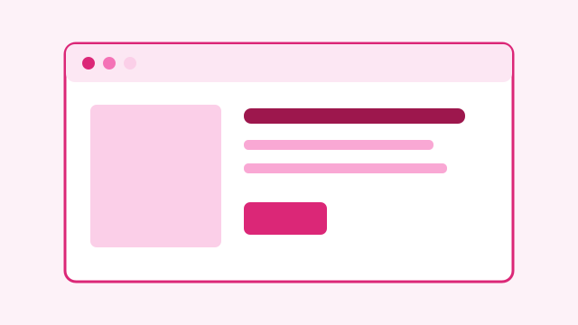

Ficha personal semántica
Una página de presentación estructurada con encabezado, navegación, contenido principal y pie de página.
Qué aprendí: a elegir elementos semánticos para que cada parte del documento tenga un propósito claro.
Estos seis proyectos son ejemplos basados en ejercicios habituales de iniciación a HTML. Sustituye sus textos y capturas por tus trabajos reales.
Una página de presentación estructurada con encabezado, navegación, contenido principal y pie de página.
Qué aprendí: a elegir elementos semánticos para que cada parte del documento tenga un propósito claro.

Un ejercicio de navegación entre páginas y secciones mediante enlaces relativos y anclas.
Qué aprendí: a enlazar documentos locales, identificar destinos con id y facilitar el recorrido por el sitio.
Una pequeña galería que organiza imágenes con sus descripciones usando figure y figcaption.
Qué aprendí: a escribir textos alternativos útiles y a relacionar cada imagen con su pie.

Una tabla de ejemplo para mostrar estudios, centros y periodos de formación de manera ordenada.
Qué aprendí: a crear tablas de datos con caption, encabezados y atributos scope para mejorar su comprensión.

Un formulario sencillo con campos etiquetados y comprobaciones básicas del navegador.
Qué aprendí: a asociar label y controles, agrupar campos y usar validación nativa.

Este portfolio reúne presentación, trayectoria, proyectos, currículum y contacto en páginas conectadas.
Qué aprendí: a mantener una navegación coherente y a comprobar las rutas entre documentos.